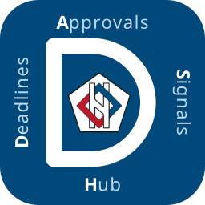
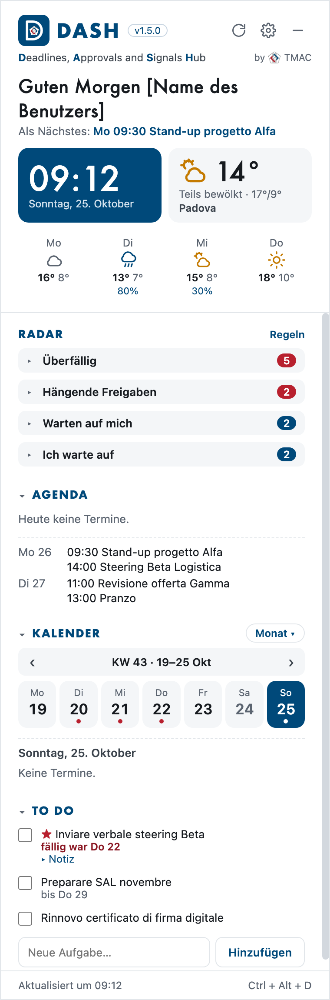
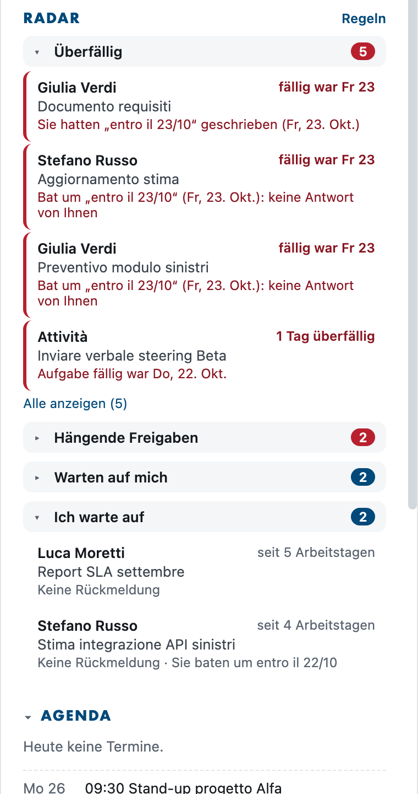
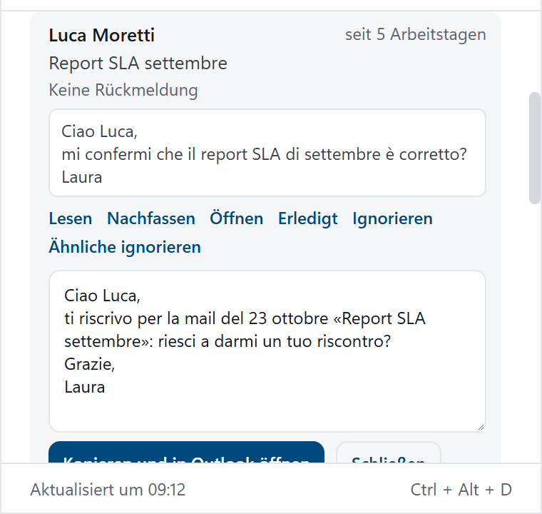
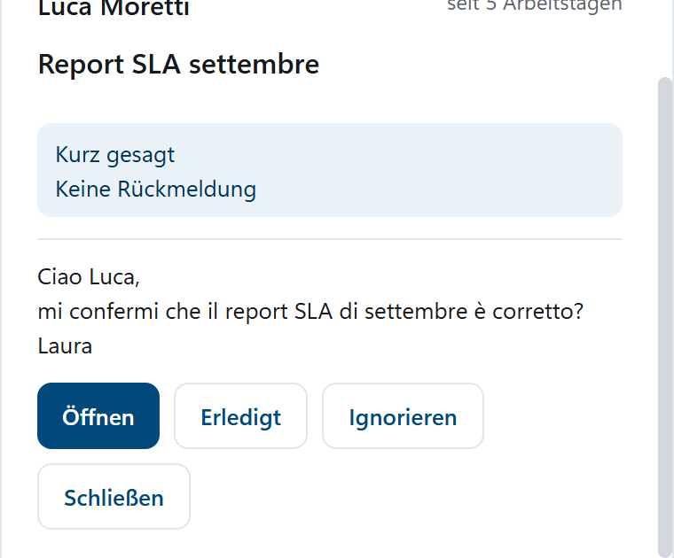
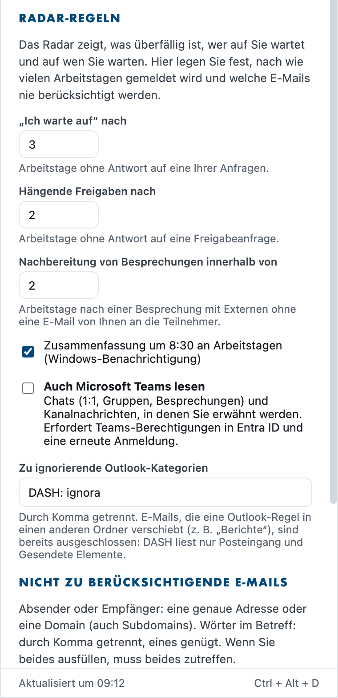
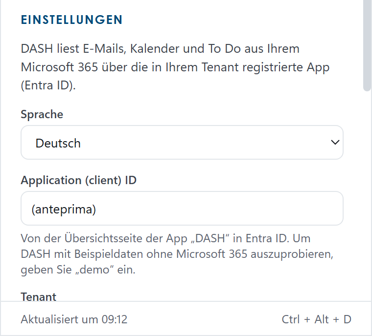
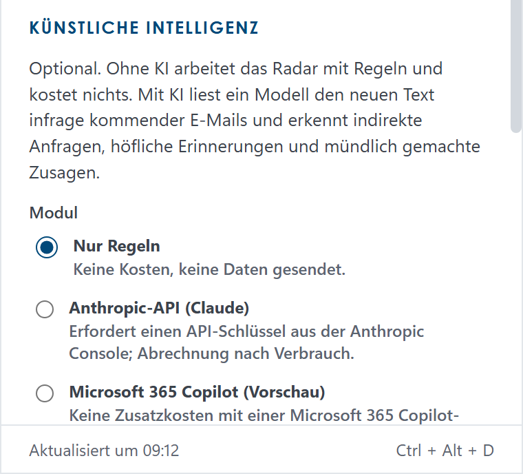
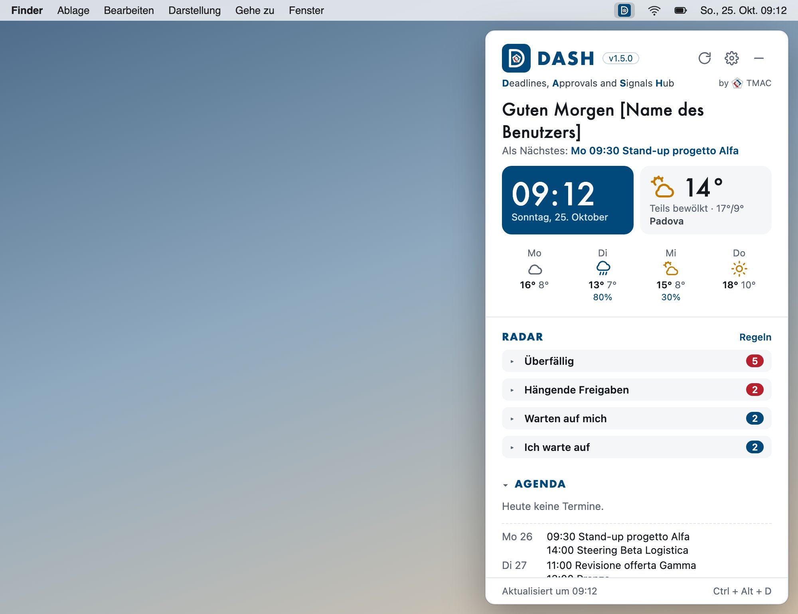
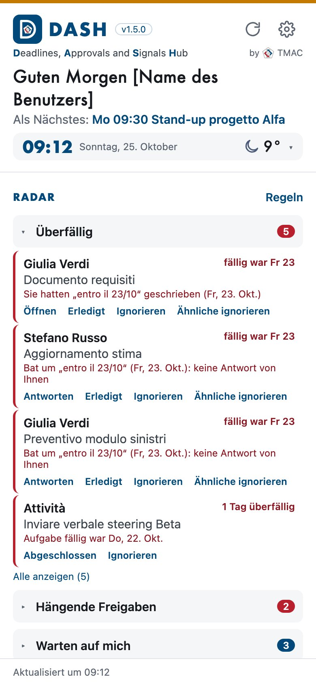

Wer heute für Kunden und in Projekten arbeitet, hat nicht zu wenige Werkzeuge, sondern zu viele. Anfragen kommen per E-Mail, in Besprechungen und in Chats; Zusagen stehen im Kalender, in To Do und oft nur im Gedächtnis. Keines dieser Werkzeuge sagt Ihnen das Wichtigste: was Ihnen gerade entgeht.
Um den Überblick zu behalten, müssen Sie täglich E-Mails und Chats neu lesen oder von Hand noch eine Liste führen. Oft fällt das Problem erst auf, wenn die Mahnung kommt.
DASH ist ein kleines Panel für Computer und Telefon, das Ihnen hilft, im Arbeitsalltag nichts zu übersehen. Es läuft unter Windows, auf dem Mac, auf iPhone und iPad und auf Android. Es liest Ihre E-Mails, Ihren Kalender, Ihre To Do-Aufgaben und, wenn Sie möchten, Ihre Teams-Chats und zeigt Ihnen auf einen Blick:
Sie müssen nichts eingeben: DASH arbeitet mit den Daten, die Sie bereits in Microsoft 365 haben. Es ersetzt weder Outlook noch Teams noch Ihre Projektwerkzeuge, sondern ergänzt sie.
| Heute | Mit DASH |
|---|---|
| Eine Anfrage verschwindet unter anderen E-Mails | Das Radar holt sie in den Blöcken für wartende Personen und Verspätungen zurück in den Blick |
| Eine Freigabe liegt fest | Das Radar meldet sie nach der von Ihnen gewählten Zahl von Tagen |
| Niemand hat Ihnen geantwortet | Das Radar erinnert Sie daran, und die Nachfass-Aktion bereitet den Text vor |
| Die Nachverfolgung einer Besprechung bleibt aus | Das Radar meldet Besprechungen mit Externen ohne E-Mail von Ihnen an die Teilnehmer |
| Sie gehen unvorbereitet in eine Besprechung | Die Vorbereitung zeigt in einer Minute, was offen ist, und den letzten Austausch |
| Eine Anfrage geht im Chat verloren | DASH liest auch Teams und erkennt mit KI unausgesprochene Anfragen |
| Sie wissen nicht, womit Sie den Tag beginnen sollen | Um 8:30 die Zusammenfassung aller offenen Punkte |
Haben Sie bereits eine Einladung oder eine Installationsdatei erhalten? Gehen Sie direkt zum Kapitel für Ihr Gerät:
| Sie haben | So wird installiert | Lesen |
|---|---|---|
| Windows-PC (10 oder 11) | Datei DASH-Setup-1.6.5.exe | Kapitel 10 |
| Mac mit Apple-Prozessor (M1 oder neuer) | Datei DASH-1.6.5-mac.dmg | Kapitel 11 |
| iPhone oder iPad | Einladung zu TestFlight | Kapitel 12 |
| Android-Telefon (7 oder neuer) | Datei DASH-1.6.5-android.apk | Kapitel 13 |
Der Rest des Handbuchs ist so aufgebaut:

Oben: das Symbol, der Name DASH mit der Version und, falls eingerichtet, das Logo Ihrer Firma. Rechts drei Schaltflächen:
Darunter: Begrüßung, nächster Termin, Uhr und Wetter.
Dann das Radar (Kapitel 4) und weiter unten Agenda (Termine von heute und den nächsten Tagen, mit «Teilnehmen» für Teams-Besprechungen), Kalender (Woche oder Monat) und To Do (Haken zum Abschließen, «▸ Notiz» zum Lesen der Notiz einer Aufgabe, ein Feld, um eine neue hinzuzufügen).
Jeder Abschnitt öffnet und schließt sich mit einem Klick auf den Titel; DASH merkt sich Ihre Auswahl.

Das Radar hat vier Blöcke, die beim Start geschlossen sind: Die Zahl neben dem Titel zeigt, wie viele Signale es gibt (rot bei «Überfällig» und «Hängende Freigaben»). Klicken Sie auf den Titel, um einen Block zu öffnen.
Jedes Signal zeigt, wer es betrifft, den Betreff, seit wie vielen Arbeitstagen es wartet (Samstage, Sonntage und italienische Feiertage zählen nicht) und eine erklärende Zeile. Ein roter Rand kennzeichnet, was dringend oder fällig ist.
Klicken Sie auf ein Signal, um es zu öffnen: Es erscheinen der vollständige Betreff und der Text (die ersten Zeilen der E-Mail oder der Teams-Nachricht oder die Notiz der To Do-Aufgabe). Ein weiterer Klick schließt es; um alles zu lesen, verwenden Sie Öffnen.
Kennzeichen: Teams (violett), wenn das Signal aus einem Teams-Chat stammt; AI, wenn es von der künstlichen Intelligenz gelesen wurde.
Bewegen Sie auf dem Computer die Maus über ein Signal, um die Aktionen zu sehen; auf dem Telefon stehen sie immer sichtbar unter dem Signal:
| Aktion | Was sie bewirkt |
|---|---|
| Antworten / Öffnen | Öffnet die E-Mail oder Besprechung in der Outlook-App (oder den Chat in der Teams-App). Ist die App nicht vorhanden, wird die Webversion geöffnet. |
| Lesen | Öffnet das ganze Signal in einem größeren Fenster: wer, Betreff, die Zusammenfassung und der gesamte neue Text der E-Mail oder Nachricht. „Zurück zum Radar“ schließt es. |
| Verschieben nach… | Ordnet das Signal einer anderen Gruppe der Ansicht „Nach Kontakt“ zu (siehe unten). Die Wahl gilt auch für künftige Signale. |
| Nachfassen | Bereitet einen höflichen Nachfass-Text vor, den Sie bearbeiten können. «Kopieren und in Outlook öffnen» kopiert ihn und öffnet die E-Mail: Fügen Sie ihn in die Antwort ein. Mit aktiver KI gibt es auch «Mit KI neu schreiben». Der Nachfass-Text wird auf Italienisch verfasst. |
| Erledigt | Die Sache ist erledigt (auch mündlich oder telefonisch): Das Signal verschwindet. |
| Ignorieren | Das Signal ist nicht relevant: Es verschwindet. |
| Ähnliche ignorieren | Erstellt eine Regel: Ab jetzt kommen E-Mails mit gleichem Absender oder Empfänger und ähnlichem Betreff nicht mehr ins Radar (z. B. die wöchentlichen Berichte eines Kunden). |
| Abgeschlossen | Nur für To Do-Aufgaben: markiert die Aufgabe als erledigt. |

Klicken Sie auf ein Signal, um es zu öffnen: Sie sehen den Text und die Aktionen. Die Nachfass-Aktion bereitet einen Text vor, den Sie bearbeiten und in die Antwort kopieren können.

Die Lese-Aktion zeigt das ganze Signal mit der Zusammenfassung und dem gesamten neuen Text der E-Mail oder Nachricht.
Mit «Erledigt» oder «Ignorieren» ausgeblendete Signale werden wieder sichtbar, wenn in derselben Unterhaltung etwas Neues eintrifft. Sie können alle unter Radar-Regeln › «Wieder anzeigen» zurückholen.
Um 8:30 an Arbeitstagen sendet DASH eine Benachrichtigung, die auf dem Bildschirm bleibt, bis Sie sie schließen, und zeigt oben im Radar den Kasten „Das Radar von heute“: die offenen Punkte vom Morgen, nach Block geordnet („Überfällig“ und „Blockierte Genehmigungen“ geöffnet, die anderen mit einem Klick). Im Laufe des Tages aktualisiert sich der Kasten: Erledigtes bleibt durchgestrichen mit ✓, später Eingetroffenes erscheint mit dem Hinweis „neu“, und oben sehen Sie, wie viel Sie erledigt haben („3 von 9 erledigt“). Ein Klick auf einen Eintrag öffnet ihn; ein Klick auf den Titel verkleinert den Kasten auf eine Zeile und öffnet ihn wieder. Der Text der Zusammenfassung ist vorerst auf Italienisch. Die Zusammenfassung lässt sich in den Radar-Regeln ausschalten.
Oben im Radar wählen Sie „Nach Art“ (die vier Blöcke) oder „Nach Kontakt“. In der zweiten Ansicht gruppiert DASH die Signale selbst: nach Firma für Absender von außen (aus der Domain der E-Mail: alfa-assicurazioni.it wird „Alfa Assicurazioni“), nach Person für Kollegen und private Postfächer. Jede Gruppe zeigt, was offen ist, zum Beispiel „Alfa Assicurazioni · 2 warten auf Sie · 1 überfällig“.
Es muss nichts eingerichtet werden. Ist eine Gruppe falsch, öffnen Sie das Signal und wählen Verschieben nach…: Gruppennamen eingeben (auch einen neuen, zum Beispiel „Verwaltung“) und wählen, ob es nur für diese Person oder für die ganze Firma gilt. Automatische Gruppe kehrt zum Vorschlag von DASH zurück. Die Auswahl wird mit Ihren anderen Geräten synchronisiert.
Eine E-Mail, die Sie in Outlook zur Nachverfolgung kennzeichnen (die Fahne), wird im Radar zu einer Aufgabe: unter „Warten auf mich“ oder, sobald das Fälligkeitsdatum der Kennzeichnung überschritten ist, unter „Überfällig“. Eine gekennzeichnete gesendete E-Mail erscheint unter „Ich warte auf“ als Nachverfolgung. Wenn Sie die Kennzeichnung in Outlook als erledigt markieren, schließt sich das Signal von selbst. Die Kategorie „DASH: importante“ bringt eine E-Mail ins Radar, auch wenn eine Regel sie ausschließen würde; „DASH: ignora“ bewirkt das Gegenteil.
Mit der Option E-Mails aus DASH kennzeichnen (Kapitel 5) zeigen die Signale Kennzeichnen und Erledigt: Die Kennzeichnung wird auch in Outlook gesetzt und erledigt.
In der Agenda steht neben Meetings mit anderen Personen Vorbereiten. Es öffnet eine Karte, die in einer Minute gelesen ist: was mit den Teilnehmern offen ist (auch mit ihren Kollegen derselben Firma) und die letzten Nachrichten der vergangenen zwei Wochen, jeweils mit einem Klick zu öffnen. Mit eingeschalteter KI erscheinen oben auch 3 Zeilen Zusammenfassung: Die KI erhält nur Betreffs und Details, nie den Text der E-Mails.
15 Minuten vor dem Meeting kommt eine Benachrichtigung: Ein Klick öffnet die Karte. Die Erinnerung lässt sich in den Radar-Regeln ausschalten.

Sie öffnen sich mit Regeln, oben rechts im Radar.
Jede Regel hat zwei Felder; wenn Sie beide ausfüllen, müssen beide zutreffen:
name@kunde.de) oder eine Domain (kunde.de, auch Subdomains);Beispiel: Von/an kunde.de und Betreff Bericht, Wochenauszug schließt die Berichte dieses Kunden aus, aber nicht seine anderen E-Mails.
Unten im Bereich listet Bei der letzten Aktualisierung ausgeschlossen (zum Öffnen anklicken) die ausgeschlossenen E-Mails und den Grund auf: nützlich, um zu prüfen, ob die Regeln tun, was Sie wollen. Denken Sie daran, auf Speichern zu klicken.
Mit eingeschaltetem Auch Microsoft Teams lesen (Radar-Regeln) berücksichtigt DASH auch:
Beim ersten Mal kann DASH Sie bitten, sich erneut anzumelden: Microsoft muss die Teams-Berechtigungen bestätigen. Ist Teams nicht lesbar, erscheint unter dem Radar-Titel eine rote Zeile «Teams nicht lesbar» mit dem Grund.

Wenn Sie DASH auf mehreren Geräten nutzen (zum Beispiel PC und iPhone), schalten Sie Mit Ihren anderen Geräten synchronisieren auf jedem davon ein. Ab dann teilen sie:
Auf jedem Gerät eigen bleiben: Client-ID und Tenant, die Sprache, der Anthropic-Schlüssel, die Tastenkombination, der Start mit Windows, das Logo und die KI-Kosten. Die Synchronisierung erfolgt bei jeder Aktualisierung und wenige Sekunden nach jeder Ihrer Aktionen; unter dem Kästchen erscheint die Uhrzeit der letzten Synchronisierung. Ändern zwei Geräte die Regeln fast gleichzeitig, gilt die letzte Änderung.
Die Daten liegen in einer Datei in einem für DASH reservierten Ordner in Ihrem OneDrive (Apps › DASH): Verschieben oder ändern Sie ihn nicht. Beim ersten Mal kann DASH Sie bitten, sich erneut anzumelden, weil Microsoft die Berechtigung für diesen Ordner bestätigen muss.
Das geschieht nur einmal für die ganze Organisation, vor der Installation der App. Wenn Sie nicht der Administrator sind, können Sie zum Kapitel Ihrer Plattform springen.
DASH liest die Daten vom E-Mail-Server Ihrer Organisation. Heute wird Microsoft 365 unterstützt (Outlook, Kalender, To Do und Teams); sobald weitere Plattformen verfügbar sind, finden Sie die Anleitungen in diesem Kapitel.
DASH verwendet eine App-Registrierung in Entra ID mit delegierten Berechtigungen: Jede Person sieht nur ihr eigenes Postfach, und die Daten fließen nur zwischen den Geräten der Benutzer und dem Microsoft 365 Ihrer Organisation (TMAC erhält nichts). Jede Organisation nutzt ihren eigenen Tenant und, für die künstliche Intelligenz, ihre eigene Copilot-Lizenz oder ihren eigenen Anthropic-Schlüssel.
Einmalig für die ganze Organisation registriert der Administrator DASH wie folgt in Ihrem Tenant und teilt den Benutzern Client-ID und Tenant (oder den Domainnamen) mit, die beim ersten Start eingegeben werden.
https://entra.microsoft.com › Identität › Anwendungen › App-Registrierungen › Neue Registrierung.http://localhost. Registrieren.| Wann | Berechtigungen |
|---|---|
| Immer | User.Read, Mail.Read, Calendars.Read, Tasks.ReadWrite, offline_access |
| Mit eingeschaltetem Teams | Chat.Read, Team.ReadBasic.All, Channel.ReadBasic.All, ChannelMessage.Read.All |
| Mit Synchronisierung zwischen Geräten | Files.ReadWrite.AppFolder (nur der DASH-Ordner im OneDrive des Benutzers, Apps › DASH) |
| Mit dem Copilot-Modul | Sites.Read.All, People.Read.All, OnlineMeetingTranscript.Read.All, Chat.Read, ChannelMessage.Read.All, ExternalItem.Read.All (alle von der Microsoft 365 Copilot Chat-API verlangt) |
| Mit „E-Mails aus DASH kennzeichnen“ | Mail.ReadWrite (nur zum Setzen und Entfernen der Outlook-Kennzeichnung; DASH löscht und versendet keine E-Mails) |
Nach dem Hinzufügen: Administratorzustimmung erteilen für die Organisation. Die Berechtigungen für Teams, Copilot und Synchronisierung werden von den Benutzern nur angefordert, wenn sie diese Funktionen einschalten.
Für die iPhone-App: Fügen Sie unter Authentifizierung auch die Plattform iOS / macOS mit der Bundle-ID it.tmac.dash hinzu.
Für die Android-App: Geben Sie unter Authentifizierung › Plattform hinzufügen › Android den Paketnamen it.tmac.dash und den Signaturhash Tvy2xt5sIIb4Hyur+URCnvo+YmQ= ein (die von TMAC verteilte .apk-Datei ist mit diesem Schlüssel signiert).
Wenn Sie KI nutzen möchten, wählen Sie das Modul auf jedem Gerät oder auf einem Gerät bei eingeschalteter Synchronisierung (Kapitel 7). Die Berechtigungen für Copilot stehen in Kapitel 8.

Sie ist optional: Ohne KI arbeitet das Radar mit Regeln und kostet nichts. Mit KI liest ein Modell den Text infrage kommender E-Mails und Nachrichten und erkennt indirekte Anfragen, höfliche Erinnerungen und mündlich gemachte Zusagen; es schreibt auch die Nachfass-Texte.
Sie öffnet sich über Einstellungen › Künstliche Intelligenz… Wählen Sie das Modul:
Höchstens gelesene E-Mails pro Tag ist eine Sicherheitsgrenze (standardmäßig 150); jede E-Mail wird nur einmal gelesen. Das Feld darunter zeigt, wie viele E-Mails heute gelesen wurden, und bei Anthropic die geschätzten Kosten des Monats. Die von der KI geschriebenen Texte (Zusammenfassungen, Nachfass-Texte) sind vorerst auf Italienisch.
Lesen Sie nur das Kapitel Ihrer Plattform und danach die erste Anmeldung.
Sie benötigen einen PC mit Windows 10 oder 11 und die Datei DASH-Setup-1.6.5.exe.
DASH-Setup-1.6.5.exe.DASH verhält sich wie ein Widget: Es liegt auf dem Desktop und rutscht hinter die anderen Apps, wenn Sie ein anderes Fenster anklicken. Es ist nicht geschlossen: Um es nach vorne zu holen, verwenden Sie die Tastenkombination Strg + Alt + D, klicken auf das DASH-Symbol im Infobereich (neben der Windows-Uhr) oder zeigen den Desktop an (Win + D).
Ein Rechtsklick auf das Symbol im Infobereich öffnet ein Menü mit Aggiorna ora (jetzt aktualisieren), Impostazioni (Einstellungen), Avvia con Windows (mit Windows starten), Ripristina posizione (Position zurücksetzen), Esci dall'account (abmelden) und Chiudi DASH (DASH schließen). Dieses Menü gibt es vorerst nur auf Italienisch.
%APPDATA%\DASH: Löschen Sie ihn, wenn Sie alles entfernen möchten.
Auf dem Mac ist DASH dasselbe Programm wie unter Windows. Sie benötigen einen Mac mit Apple-Prozessor (M1 oder neuer): Auf Macs mit Intel-Prozessor lässt sich diese Version nicht öffnen.
DASH-1.6.5-mac.dmg.Command+Shift+D..dmg-Datei und ziehen Sie DASH auf Programme; wählen Sie Ersetzen. Einstellungen, Regeln und Anmeldung bleiben erhalten.~/Library/Application Support/DASH: Löschen Sie den Ordner, wenn Sie alles entfernen möchten.Vorerst wird DASH für iPhone und iPad mit TestFlight installiert, der App von Apple für Testversionen.

Oberfläche, Radar, Regeln und künstliche Intelligenz sind dieselben wie auf dem Computer. Das ist anders:
dash.tmac.it/assistance.html.Wenn Sie DASH auch auf einem anderen Gerät verwenden und dieselben Regeln, ausgeblendeten Signale und KI-Analysen möchten, schalten Sie auf beiden Mit Ihren anderen Geräten synchronisieren ein (Kapitel 7).
Halten Sie das DASH-Symbol auf dem Home-Bildschirm gedrückt › App entfernen › App löschen.
Auf Android-Telefonen ist DASH dieselbe App wie auf dem iPhone; benötigt wird Android 7 oder neuer. Die Besonderheiten des Telefons stehen in Kapitel 12 („Besonderheiten auf dem Telefon“), einschließlich der zwei Spalten im Querformat oder auf aufgeklappten Faltgeräten.
Vorerst gibt es DASH für Android nicht im Play Store: Sie installieren es aus der Datei DASH-1.6.5-android.apk, die Sie per E-Mail, OneDrive oder Teams erhalten.
.apk-Datei über die alte: Einstellungen, Regeln und Anmeldung bleiben erhalten.Halten Sie das DASH-Symbol gedrückt › Deinstallieren.
Die erste Anmeldung ist auf allen Geräten gleich. Auf dem Telefon tippen Sie dort, wo „klicken“ steht.
firma.de, oder die Verzeichnis-ID). Klicken Sie auf Speichern.demo ein (kein Tenant nötig), klicken Sie auf Speichern und dann auf Anmelden. DASH zeigt Beispieldaten in der Sprache der App, mit dem Hinweis „Demo-Modus“ immer im Blick; es verbindet sich nicht mit Microsoft und lässt Ihre Daten und Regeln unberührt. Zum Beenden: Demo beenden, oder das Feld leeren bzw. Ihre Client-ID eingeben.| Was Sie sehen | Was zu tun ist |
|---|---|
| Sie haben keine Client-ID und keinen Tenant | Fragen Sie den Microsoft 365-Administrator Ihrer Organisation und leiten Sie ihm Kapitel 3 weiter. Um DASH sofort auszuprobieren, geben Sie demo statt der Client-ID ein. |
| «Sitzung abgelaufen: bitte erneut anmelden.» | Klicken Sie auf Anmelden und melden Sie sich erneut an. Das passiert nach einer Änderung des Passworts oder der Berechtigungen. |
| «Administratorgenehmigung erforderlich» bei der Anmeldung | Der Microsoft 365-Administrator muss der App DASH die Zustimmung erteilen (Kapitel 8). |
| «Teams nicht lesbar» im Radar | Es fehlen die Teams-Berechtigungen: Informieren Sie den Administrator. Sie können Teams in den Regeln ausschalten. |
| «KI: Fehler» oben im Radar | Bewegen Sie die Maus darüber, um den Grund zu lesen. Copilot: erfordert die Microsoft 365 Copilot-Lizenz und die Berechtigungen; Anthropic: ungültiger Schlüssel oder aufgebrauchtes Guthaben. |
| Unter «Synchronisieren…»: «OneDrive verweigert den Zugriff» | Es fehlt die Berechtigung Files.ReadWrite.AppFolder: Informieren Sie den Administrator (Kapitel 8), melden Sie sich dann ab und erneut an. |
| Ein falsches Signal, das immer wiederkommt | Verwenden Sie Ähnliche ignorieren, eine Regel oder eine Outlook-Kategorie. |
| Ein erwartetes Signal fehlt | Prüfen Sie «Bei der letzten Aktualisierung ausgeschlossen» in den Regeln; DASH betrachtet die letzten zwei Wochen und nur Posteingang und Gesendete Elemente. |
| Was Sie sehen | Was zu tun ist |
|---|---|
| DASH «ist verschwunden» oder scheint geschlossen | Es liegt hinter den anderen Fenstern: Strg + Alt + D oder Klick auf das Symbol im Infobereich. Fehlt das Symbol, starten Sie es über das Startmenü. |
| Auf dem Mac «ist DASH verschwunden» | Klicken Sie auf das D in der Menüleiste oben rechts oder drücken Sie ⌃ ⌥ D. |
| Der Mac öffnet DASH nicht | Systemeinstellungen › Datenschutz & Sicherheit › Trotzdem öffnen (Kapitel 11). Auf Macs mit Intel-Prozessor funktioniert diese Version nicht. |
| Eine Meldung, dass die Tastenkombination bereits von einem anderen Programm verwendet wird | Wählen Sie in den Einstellungen eine andere Kombination (z. B. Control+Alt+Shift+D). |
| Was Sie sehen | Was zu tun ist |
|---|---|
| Die Zusammenfassung um 8:30 kommt nicht an | Erlauben Sie in den Telefoneinstellungen die Mitteilungen von DASH und prüfen Sie, ob die Zusammenfassung in den Radar-Regeln eingeschaltet ist. |
| Morgens sind die Signale nicht aktuell | Das ist normal: Das Telefon aktualisiert nur bei geöffneter App. Öffnen Sie sie und warten Sie einen Moment; mit KI kann es einige Minuten dauern. |
| TestFlight meldet, die Version sei abgelaufen | Öffnen Sie TestFlight und tippen Sie bei DASH auf Aktualisieren. Gibt es keine neue Version, schreiben Sie der Person, die Sie eingeladen hat. |
DASH · Deadlines, Approvals and Signals Hub · Version 1.6 · by TMAC — Where experience matters!